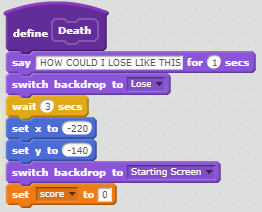
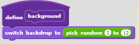

Portfolio
Dinosaur Dash
Dinosaur Dash is a platform game that my partner, Tommy, and I developed.
It is supposed to represent a game similar to the classic Super Mario Bros.
but making the code for each of the levels and for the controls took much
of our time so far. Finishing a 'level' would teleport you, the player, to
a random stage. Each of the levels are difficult in their own ways, and
you get 20 points for completing each one. The score simply resets when
you die. The real challenge begins when you reach 480 points...
Game Reflection
We created this game based on the familiarity with Super Mario Bros.
games. With our knowledge of Scratch so far, we thought we could recreate
some significant parts of the game. Our two successful points was the creation
of the "jump" block, allowing the character to ascend vertically then descend
like how gravity affects people in real life, and the creation of the "death"
block, which allowed us to reset the game after the character dies. Creating
the jump block was definitely a challenge, as we just didn't know how to allow
other keys to be pressed while our character jumped. Another formidable
obstacle was creating the different stages. Creative and new ideas were hard
to come by. Nonetheless, if we had more time to work on the game, we would
work more on refining stages and the endgame.
One of the most significant algorithm that we created in the game, seen
below allows our sprite to stand on objects that are not ground level, or
more specifically, the brick blocks. On these blocks, the sprite could
perform any function as they could at ground level and if our character
walked off, it would return to ground level. Note that this algorithm
works hand in hand with the algorithm allowing the character to jump.
More Blocks Created
Below are some blocks that we created.
 Choose Your Own Adventure Program: Benpigmin
In this story, a portly pig, Ben, has been called upon to embark on an
adventure no other pig would ever think of doing. Through a series of
life-endangering choices, Ben arrives at Princess Kent's castle to save her
from a peacock.
Reflection
The way we dealt with creating each story event in our program was
iterative, or following the same patterns. We set the typing speed
of the text to the same speed, added several pauses for the reader to catch up
on reading, and a variable for our text (separate from the event variable)
for cleaner code. Our incremental development processes, however, was
that with every new path, we had to organize the separate event codes
so that it would be easier to follow. This would prove to be the most
difficult part in developing the story, but with two people working at
once, each of us could prioritize on separate paths at a time. Because
of how complicated and messy the coding for the scenes would be, we used
a form of procedural abstraction by dividing our story into sections when
there is a change between user input and story using variables. In addition
to that, we further divided our story events by creating a variable for
the actual story text, then inserting it into the main story event that
also includes the typing speed and pauses. This is a type of procedural
abstraction because it allows people who read the code to understand what
is happening quicker without actually having to read everything. Creating
this story reminded me of how much I liked the storylines in Mario games,
where unlike what we created, had a fixed story, but was similar in that
they were interactive, which enlivens the story experience.